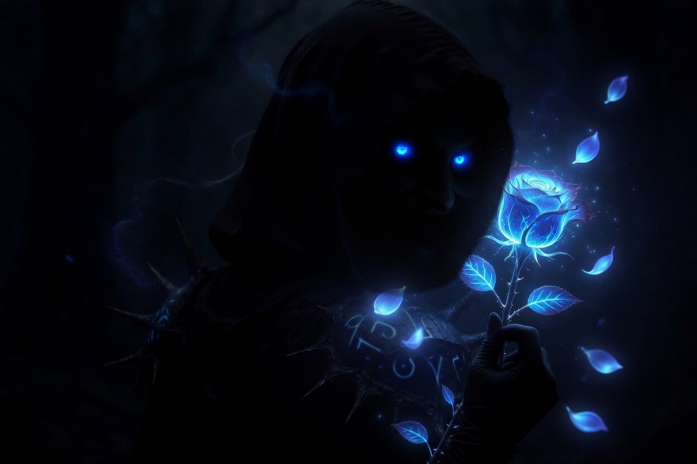
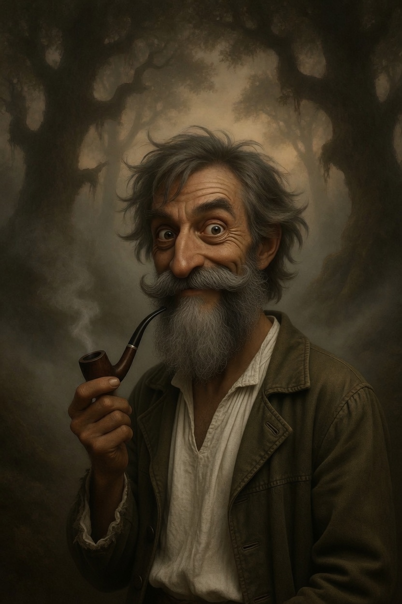
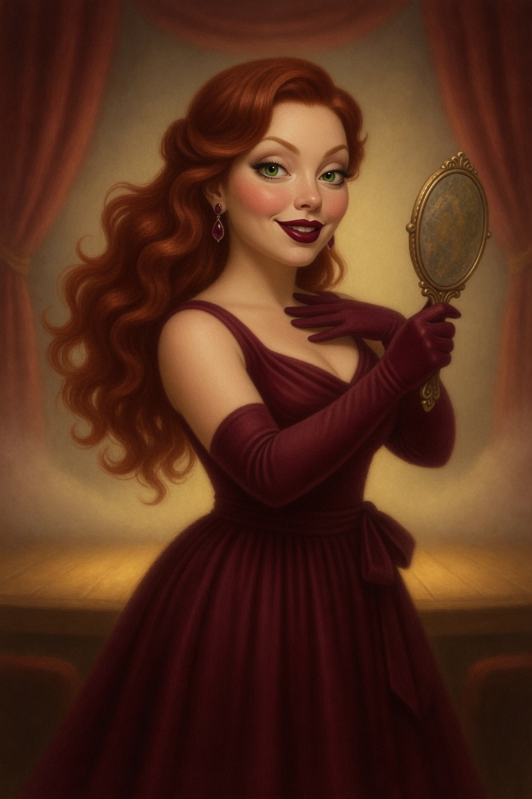
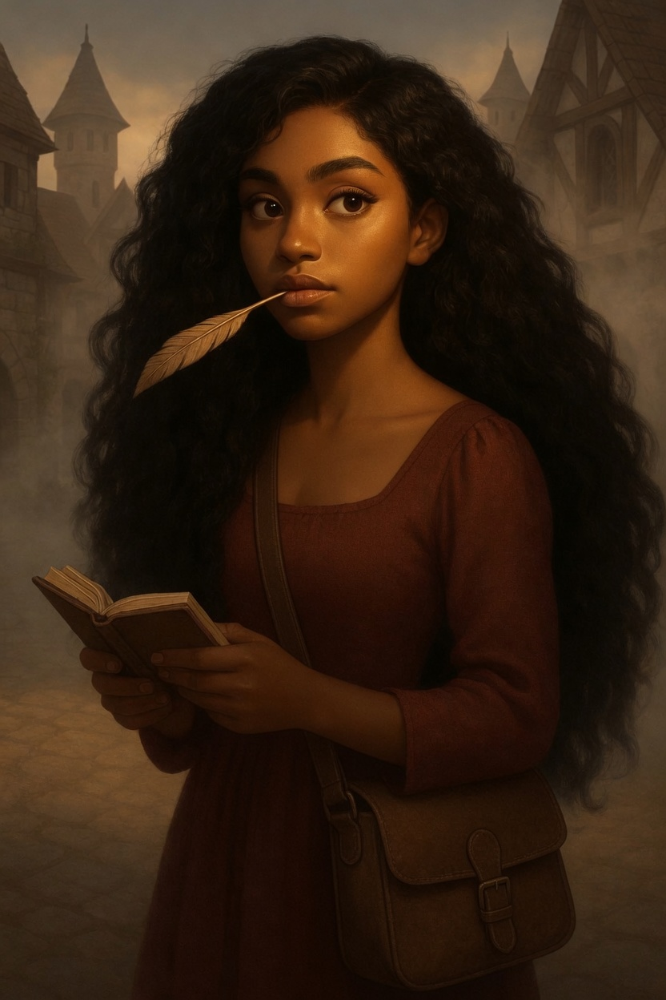
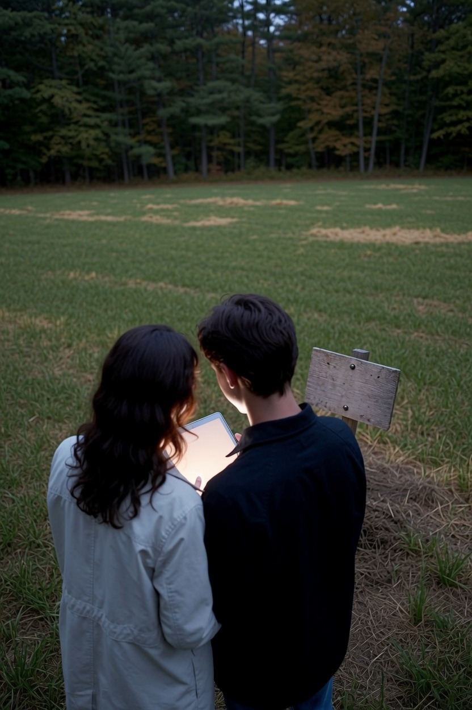

In Zilverweide schuilt iets ouds, iets dat generaties lang zweeg. Het dorp leeft zijn dagen alsof er niets aan de hand is. Maar er zijn namen die niemand meer hardop uitspreekt.
De Rozen van Zilverweide is een coöperatief mysterie dat je met je groep op locatie speelt. Ieder krijgt een eigen rol, een eigen scherm en een eigen stukje van de waarheid. Alleen samen leggen jullie bloot wat er die nacht werkelijk gebeurde.
Binnenkort speelbaar.

Wie speel jij?





Loop door Zilverweide, samen, ieder met een eigen scherm of gedeeld aan één tablet. Een park, een tuin, of gewoon jullie eigen huiskamer wordt het dorp.
Wat de eerste spelers zeiden
Halverwege wist ik niet meer wie ik nog kon geloven.
Je vergeet gewoon dat je in een tuin staat. Ineens ben je er middenin.
Meestal gespeeld met groepen van 4 tot 8. Met meer of minder? Stuur gerust een berichtje, dan kijken we wat past.
Volg op InstagramVolg ons en hoor als eerste wanneer het dorp zijn poorten opent.
Eerder meespelen? Deze zomer spelen de eerste groepen. Stuur een berichtje en test het mysterie als een van de eersten.